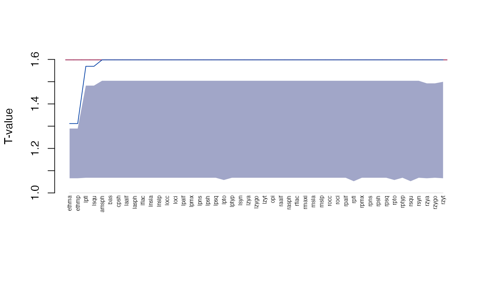

Form difference
edma_fdm.RdForm difference matrix based inference based on Lele and Richtsmeier (1992, 1995).
Usage
edma_fdm(numerator, denominator,
B=0, ref_denom=TRUE, mix=FALSE)
get_influence(object, ...)
# S3 method for edma_dm
get_influence(object, level=0.95, ...)
# S3 method for edma_influence
plot(x, ...)
get_fdm(object, ...)
# S3 method for edma_fdm
get_fdm(object, sort=FALSE, level=0.95,
what="all", ...)
global_test(object, ...)
# S3 method for edma_fdm
global_test(object, ...)
# S3 method for edma_dm
confint(object, parm, level=0.95, ...)
# S3 method for edma_fdm
print(x, ...)
# S3 method for edma_fdm
landmarks(x, ...)
# S3 method for edma_fdm
dimensions(x, ...)
plot_ci(x, ...)
plot_test(x, ...)
# S3 method for edma_dm
plot(x, ...)
# S3 method for edma_dm
plot_2d(x, ...)
# S3 method for edma_dm
plot_3d(x, ...)
# S3 method for edma_dm
plot_test(x, ...)
# S3 method for edma_fdm
plot_ci(x, ...)
# S3 method for edma_fdm
plot_ord(x, ...)
# S3 method for edma_fdm
plot_clust(x, ...)Arguments
- numerator, denominator
EDMA fit object to compare forms.
- B
nonnegative integer, the number of bootstrap replicates.
- ref_denom
logical, when
TRUE, thedenominatoris used as reference object (its form matrix is fixed when calculating bootstrap comparing to the other object).- mix
logical, to use mixed bootstrap (numerator and denominator populations are mixed with replacement) or not (only the non-reference population is resampled with replacement, reference is fixed).
- x, object
an EDMA FDM object of class 'edma_fdm'.
- sort
logical, if stacked distances are to be sorted, see Examples.
- level
numeric, between 0 and 1, alpha level for confidence interval.
- parm
a specification of which parameters are to be given confidence intervals, either a vector of numbers or a vector of names. See
confint.- what
what part of the ford differences to return:
"all","less"or"greater"than 1,"signif"or"nonsignif".- ...
other arguments passed to methods.
Details
Form difference (FDM) is calculated as the ratio of form matrices (FM) from the numerator and denominator objects following Lele and Richtsmeier (1992, 1995): FDM(A,B) = FM(B)/FM(A). Form matrices are formed as pairwise Euclidean distances between landmarks from EDMA fit objects using the estimated mean forms.
Bootstrap distribution is based on either 'mixed' or not mixed bootstrap distribution. The 'mixed' bootstrap means that the bootstrap distribution represents n1+n2 specimens from the pooled sample of the numerator and denominator populations.
The default is mix=FALSE in which case we fix the
reference FM and taking the ratio between the reference FM
and the bootstrap FMs from the other non-reference object
(depending on the ref_denom argument).
The T-statistic is based on the pairwise distanced in the FM,
taking the max/min of the distances. Confidence intervals for local testing
(via confint, get_fdm, and plot_ci)
and T-test for global testing
(via global_test, and plot_test)
is based on the observed T-statistic and the bootstrap distribution.
The global testing algorithm is as follows: Suppose population 1 is the 'reference' population. Step 1: Resample n1 observations from the first sample and compute FM1*. Step 2: Resample n2 observations from the first sample and compute FM2*. Step 3: Compute the FDM* = FM2*/FM1* and T* = max(FDM*)/min(FDM*) Step 4: Repeat the above three steps B times to get the p-value.
Local testing (CI: confidence interval calculation) for elements of the FDM is based on the following algorithm: Step 1: Resample n1 observations from the first sample and compute FM1*. Step 2: Resample n2 observations from the second sample and compute FM2*. Step 3: Compute the FDM* = FM2*/FM1* Step 4: Repeat the above three steps B times to get the confidence intervals for the elements of the FDM.
Influential landmarks are identified by leaving one landmark out,
then comparing the T-statistic with the value based on all the
landmarks. The existing bootstrap distribution of
the mean form is used (i.e. no re-estimation of the mean form)
in get_influence.
Value
edma_fdm compares two EDMA fit objects and calculates
form difference.
confint returns the confidence intervals for FDM,
the get_fdm extract the stacked FDM with confidence intervals,
the plot_ci visualizes the ordered form differences with
confidence intervals.
get_influence extracts landmark influence information,
the plot method visualizes this.
global_test presents the global T-test,
the bootstrap distribution and observed T-value is
visualized by plot_test.
plot and plot_2d produces a 2D plot of the mean form
from the reference object ('prototype').
plot_3d use the rgl package to make a 3D plot using the same
mean form. Influential landmarks are colored red.
Lines represent distances between landmarks,
<1 differences are colored blue, >1 differences are colored red.
The plot_ord and plot_clustproduce plots based on dissimilarities among specimens
in the two objects.
References
Lele, S. R., and Richtsmeier, J. T., 1992. On comparing biological shapes: detection of influential landmarks. American Journal of Physical Anthropology 87:49--65. <doi:10.1002/ajpa.1330870106>
Lele, S. R., and Richtsmeier, J. T., 1995. Euclidean distance matrix analysis: confidence intervals for form and growth differences. American Journal of Physical Anthropology 98:73--86. <doi:10.1002/ajpa.1330980107>
Examples
file1 <- system.file("extdata/crouzon/Crouzon_P0_Global_MUT.xyz",
package="EDMAinR")
x1 <- read_xyz(file1)
file2 <- system.file("extdata/crouzon/Crouzon_P0_Global_NON-MUT.xyz",
package="EDMAinR")
x2 <- read_xyz(file2)
numerator <- edma_fit(x1, B=10)
denominator <- edma_fit(x2, B=10)
fdm <- edma_fdm(numerator, denominator, B=10)
fdm2 <- edma_fdm(numerator, denominator, B=10, ref_denom=FALSE)
fdm
#> EDMA form difference matrix
#> Call: edma_fdm(numerator = numerator, denominator = denominator, B = 10)
#> 10 bootstrap runs (ref: denominator)
#> Tobs = 1.5981, p < 2.22e-16
fdm2
#> EDMA form difference matrix
#> Call: edma_fdm(numerator = numerator, denominator = denominator, B = 10,
#> ref_denom = FALSE)
#> 10 bootstrap runs (ref: numerator)
#> Tobs = 1.5981, p < 2.22e-16
head(get_fdm(fdm))
#> row col dist lower upper
#> 1 bas amsph 1.0425379 1.0231651 1.0536325
#> 2 cpsh amsph 0.9823765 0.9666795 0.9942260
#> 3 ethma amsph 1.0037761 0.9960499 1.0136159
#> 4 ethmp amsph 0.9401242 0.9233618 0.9491492
#> 5 laalf amsph 0.9878983 0.9765284 1.0000683
#> 6 lasph amsph 1.0161844 1.0022198 1.0318382
head(get_fdm(fdm, sort=TRUE, decreasing=TRUE))
#> row col dist lower upper
#> 136 ethmp ethma 1.377873 1.344075 1.495007
#> 697 rpto lpto 1.131002 1.085758 1.157230
#> 179 laalf ethmp 1.095672 1.081548 1.116852
#> 200 raalf ethmp 1.094267 1.082117 1.114245
#> 881 rpmx raalf 1.080811 1.064084 1.101458
#> 607 rpns lpns 1.078698 1.065126 1.096066
head(get_fdm(fdm, sort=TRUE, decreasing=FALSE))
#> row col dist lower upper
#> 527 lsqu lpfl 0.8622059 0.8396152 0.9341213
#> 1022 rsqu rpfl 0.8781312 0.8486824 0.9506620
#> 93 ethmp cpsh 0.9034404 0.8793594 0.9172729
#> 212 rpsh ethmp 0.9177018 0.8946190 0.9286655
#> 190 lpsh ethmp 0.9181652 0.8945294 0.9312234
#> 4 ethmp amsph 0.9401242 0.9233618 0.9491492
global_test(fdm)
#>
#> Bootstrap based EDMA T-test
#>
#> data: form difference matrix
#> Tobs-value = 1.5981, B = 10, p-value < 2.2e-16
#>
global_test(fdm2)
#>
#> Bootstrap based EDMA T-test
#>
#> data: form difference matrix
#> Tobs-value = 1.5981, B = 10, p-value < 2.2e-16
#>
head(confint(fdm))
#> 2.5% 97.5%
#> bas-amsph 1.0231651 1.0536325
#> cpsh-amsph 0.9666795 0.9942260
#> ethma-amsph 0.9960499 1.0136159
#> ethmp-amsph 0.9233618 0.9491492
#> laalf-amsph 0.9765284 1.0000683
#> lasph-amsph 1.0022198 1.0318382
head(infl <- get_influence(fdm))
#> landmark Tdrop lower upper
#> 1 amsph 1.598078 1.078482 1.505783
#> 2 bas 1.598078 1.078482 1.505783
#> 3 cpsh 1.598078 1.078482 1.505783
#> 4 ethma 1.311754 1.078482 1.291040
#> 5 ethmp 1.311754 1.078482 1.291040
#> 6 laalf 1.598078 1.078482 1.505783
plot(infl)

plot_ord(fdm)
 plot_clust(fdm)
plot_clust(fdm)
 plot_test(fdm)
plot_test(fdm)
 plot_ci(fdm)
plot_ci(fdm)
 plot_2d(fdm)
plot_2d(fdm)
 if (interactive())
plot_3d(fdm)
if (interactive())
plot_3d(fdm)